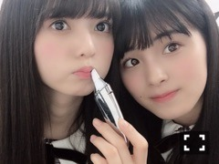

2019/0312Tueお財布の日。
お疲れ様です。
ガルちゃんももちゃん
1人でね自撮りをするの心細かったの
そしたらガルちゃんが
じゃあ僕もうつるよって、優しいなぁ
7th year Birthday Live
ありがとうございました。
全曲披露、何回も落ち込みながらの
リハーサルの日々で、確認をするたび
不安が増えていくのです、
自信のないネガティヴなまま
ライブ期間を過ごしてしまいました。
今回のライブでは、
生駒さんのポジションに入らせて
頂くことが多く、センターに立つことも。
先輩方の歴史のある曲に自分が入って
曲のイメージが変わってしまったら
どうしようなどと考えていました
新しく覚えなければいけない曲も多く、
覚えが悪いため何回教えて頂いても
覚える事が出来ず、先輩に聞き、
先生に聞き、たくさん助けて頂きました。
2年前のバースデーライブで
初めて先輩方と同じステージに立ち、
ステージ上でパニックになり。
大泣きでしたよね...笑
勝手にはけようとすらしていた2年前
そんな桃子でしたが、
7th year Birthday Live 3日目は
「 京セラ行くぞー！ 」
と自分の言葉でライブが始まったこと
自分でも驚きました。
そして、一曲目に三番目の風を
加入して初めて頂いた曲を
初めて頂いた制服を、久しぶりに着て
3期生のみんながなぜだかいつもより、
もっとキラキラしているように
思ったのです、
涙が出そうになりましたよ～
時は流れています、
嬉しいような悲しいような
わからないですが...
最終日4日目は、
七瀬さんの卒業コンサートで
たくさんのメンバーが涙を、
たくさん愛されているなぁと
とても温かい気持ちになりました。
今回のライブ期間は、
限界だと思うことばかりで
ステージ上では泣きませんでしたが、
裏ではもう出来ないと涙が出まして、
そんな時白石さんは、お姉様がですね、
そんなこと言わない！
泣かないももこ。できるんだから！
と言ってくれました。優しいです。
この言葉で頑張らなきゃ、と
折れかけていた心は立ち直ったのです^ ^
皆さん知ってるかもですが
ももちゃんはお姉様がだいすき。
そう、だいすき
はい～そんなこんなで無事に
ライブを完走することができたのですね～✨
見に来てくださった方、
映画館に足を運んで下さった方、
ありがとうございました。
先日は、帰り道は遠回りしたくなるの
全国握手会もありました
純ちゃんのファンの方、
いつも来てくださるももこのファンの方
他の子推してるけど来てみたみたいな
ちょっとももこの嫌がる浮気性タイプ、
だけどね、一回来たらもうこれからずっと
来なきゃなんだよ？わかってるかなぁ^ ^
来てくださった皆さん
本当にありがとうございました。

これすると唇ぷるぷるなるんですよーー
と自慢していたら
えー飛鳥ちゃんもやる～って。
はーとはーとはーと
ももこはどこに行ったらいいか
わからない時、とりあえず
真夏さんのそばに近寄ります、笑
新しいテディーベアちゃんが
やって来ます、待ち遠しいなぁ。
では、またね